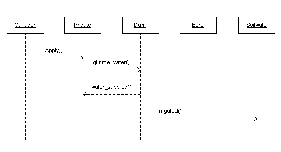
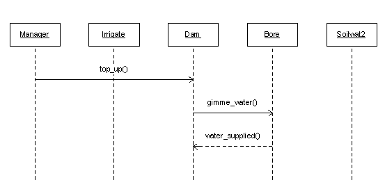
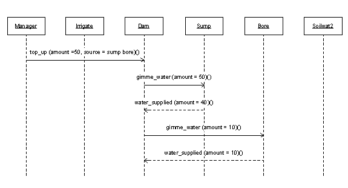

Description
APSIM WaterSupply is an instantiable module, capable of performing the role of water-source for the APSIM Irrigate module.
The module can be configured to simulate a dam, sump, river, bore or effluent source.
In any given APSIM simulation, different instances of WaterSupply can be configured to represent one or more of these water sources, at the same time.
For example:
version = 3.1
[apsim.sample_soilwat2]
title=Soilwat2 Sample Simulation
module = clock soilwat2.par [sample]
module = report soilwat2.par [sample]
module = Input(Met) %apsuite\apsim\met\sample\dalby.met[weather]
module = manager soilwat2.par [sample]
module = soilwat2 soilwat2.par [black_earth] soilwat2.ini [standard]
module = soiln2 soilwat2.par [black_earth]oiln2.ini [standard]
module = solute soilwat2.par [sample]solute.ini [standard]
module = Screen soilwat2.par [sample]
module = SummaryFile soilwat2.par [sample]
module = WaterSupply(dam) soilwat2.par [sample] dam.ini [standard]
module = WaterSupply(bore) soilwat2.par[sample]bore.ini [standard]
module = WaterSupply(sump) soilwat2.par[sample] sump.ini [standard]
module = irrigate
In the above simulation, WaterSupply is being instantiated to simulate a dam, a bore, and a sump.
Each instance of this module is capable of maintaining an available pool of water, with a dynamic solute composition, able to provide water or receive water as required.
Transfers of water between WaterSupply and Irrigate, or between WaterSupply and other instances of itself (eg dam and sump), are driven by commands from the APSIM Manager module.
The WaterSupply module is subject to various internal daily processes which produce a dynamic balance of both water and solutes in storage.
Depending on type of storage (eg dam or bore), these processes include direct capture of rainfall,
capture of surface runoff (both local and catchment), evaporation and seepage losses, and renewal of allocations.
WaterSupply Parameterisation
The first and most critical piece of information required by the APSIM WaterSupply module during configuration is a parameter called "storage_type".
There are six discrete categories available, and each instance of this module must be configured as one of these:
- dam_gully - a open surface storage formed by damming a watercourse
- dam_ring - a open-surface ring-tank into which water is pumped for storage
- dam_exc - an open-surface excavated storage
- sump - an open sump which generally collects local and/or catchment runoff
- river - a watercourse from which an annual pumping allocation is granted
- bore - a underground water-source from which similar allocation is granted
nb. An Effluent Source would best be configured as type "bore", since it will not be subject to daily processes such as evaporation, seepage etc. (see later).
Depending on which "storage_type" is configured, the following parameters are required by APSIM WaterSupply:
For Dams and sumps
[sample.watersupply.parameters]
source_type = dam_ring ! type of water source
receive_catchment_runoff = yes ! use "yes" if dam collects runoff from larger catchment area
catchment_area = 120.0 ! catchment area (ha) (required only if "receive_catchment_runoff" equals "yes")
catchment_runoff_factor = 0.5 ! multiplier for soilwat2.runoff, applied to catchment area (required only if "receive_catchment_runoff" equals "yes")
receive_crop_runoff = yes ! use "yes" if dam collects runoff from simulated crop area
max_available_water = 150.0 ! capacity (ML)
max_area = 20 ! storage water surface area at capacity (ha)
init_available_water = 144.0 ! supply volume available at start of simulation (ML)
max_pump = 20.0 ! maximum pump delivery volume per day (ML/day)
min_volume = 5.0 ! minimum volume in storage below which pump cannot access
permeability = 0.00007 ! permeability of sealing layer (m/day)
seal_thickness = 0.5 ! thickness of low permeability seal (m)
init_br_conc = 100.0 ! initial bromide concentration (ppm)
For Bores and Rivers
[sample.watersupply.parameters]
source_type = bore ! type of water supply
max_available_water = 400.0 ! maximum allocation including carry-overs (ML)
init_available_water = 200.0 ! volume available at start of simulation (ML)
max_pump = 20.0 ! maximum pump delivery volume per day (ML/day)
min_volume = 0.0 ! minimum volume in storage below which pump cannot access
annual_allocation = 200.0 ! Annual Allocation in ML
allocation_renewal_day = 270 ! Day of year on which allocation is granted
init_br_conc = 100.0 ! initial bromide concentration (ppm)
init_cl_conc = 8.0 ! initial chloride concentration (ppm)
Parameterising Solutes
As can be seen in of the above examples, initial concentrations of solutes in the storage water can be specified using the parameter "init_xxx_conc" in parts-per-million,
where "xxx" is the name of the solute.
All solutes used in the system must also be initialized in the APSIM Solute module and given an initial distribution in the soil layers, even if this is zero in all layers.
As water is transferred between various elements in the simulation (sumps, dams, bores, irrigation, soil), solutes will be transferred accordingly.
WaterSupply Processes
Rainfall Capture
For open surface dams and sumps, rainfall results in a storage gain, expressed by:
rain_capture = (area* rain)/100 (1)
where,
- rain_capture = storage gain from rainfall event (Ml)
- area = capture surface area of dam (ha)
- rain = precipitation (mm)
Bore and river allocations are not affected by precipitation.
Runoff Capture
For open dams and sumps,
if the input parameter
receive_crop_runoff = yes
then
local runoff (soilwat2.runoff)
will be added to the storage water.
Soilwat2.runoff
is calculated in mm,
hence
crop_area (ha)
must be provided as a manager variable whenever WaterSupply is being used,
to convert to ML.
If the input parameter
receive_catchment_runoff = yes
then the user must also supply two further parameters
catchment_area (ha)
and
catchment_runoff_factor (0-1).
The latter of these two subsequent inputs is a multiplier to the soilwat2.runoff parameter,
effectively describing the water-shedding potential of the catchment in comparison to the cropped area.
If none of the instances of WaterSupply in a given simulation are configured to receive runoff,
then runoff is lost from the system.
Runoff capture is calculated on a daily basis.
Evaporation
For open dams and sumps, loss of water to the atmosphere through evaporation is a daily occurrence. Evaporation is calculated in a two stage process as follows:
From CERES maize soil evaporation
soil_evaporation = radn*23.8846*(0.000204-(0.000183*0.1)) *(29+(0.6* maxt+0.4* mint)) (2)
where
- radn = incident solar radiation (Mj/m2)
- maxt = maximum daily temperature (oC)
- mint = minimum daily temperature (oC)
The evaporation from the surface of the dam/sump is then calculated according to:
evaporation = vol-(area*((d-(0.7*se/1000))** b)) (3)
where
- vol = current storage volume (Ml)
- area = dam surface area at capacity (ha)
- d = current storage depth (m)
- se = soil evaporation (as calculated above)
- b = geometry factor for dam type (from ini file)
Seepage
For open dams and sumps, loss of water through seepage out the base and sides is also a daily occurrence. Seepage is calculated as follows:
seepage = vol-(area*((d-(k*(d/st)/365.0))** b)) (4)
where
- vol = current storage volume (Ml)
- area = dam surface area at capacity (ha)
- d = current storage depth (m)
- k = permeability of base (m/day)
- st = seal thickness (m)
- b = geometry factor for dam type (from ini file)
Overflow
For open dams and sumps, incoming water which takes the storage volume above capacity is reported daily as "overflow" (ML).
Allocation Renewal
For bores and rivers, an allocation renewal check is made every day, and on the day specified as "renewal day" in the input parameters, the "annual_allocation" is cred to the available storage volume. The amount of carry-over allowed is specified by the user in setting "max_available water".
Using WaterSupply with APSIM Irrigate
APSIM Irrigate works on a "mm" basis, whereas APSIM WaterSupply works on real volumes (ML).
Hence, when an irrigation application is specified in mm, an "area of application" must be provided in order to calculate the required volume of water from the specified source instance of WaterSupply.
As mentioned previously, whenever WaterSupply is used in a simulation for supply of irrigation water, a variable called "crop_area" (ha) must be specified in the manager logic.
Irrigations using water from WaterSupply can only be initiated by using the "irrigate apply" action in manager.
A new optional argument called "source" is added to the "apply" command line to trigger the use of water from WaterSupply.
The required syntax is as follows:
[sample.manager.start_of_day]
if day = 10 then
irrigate apply amount=10 (mm), source = dam bore dam2 ()
endif
The argument "source" specifies the sources from which to obtain the irrigation water, in preferential order.
In other words, in the above example, if the dam cannot fully supply the required water, the balance will be taken from the bore.
If there is still a shortage of water, then dam2 will be asked next to supply water.
There is no limit to the number of sources which can be specified.
When the irrigation water is applied to the soil, it will carry the solutes makeup of the water source being used.
Transfering Water between Instances of WaterSupply
In the general operation of an irrigation and water-storage system, there may be numerous occasions where the farmer wishes to transfer water between a sump and the dam, or to pump water from a bore or river into a dam.
This is easily achieved in APSIM WaterSupply by employing the "TOP_UP" command from manager:
To transfer 5 megalitres of water from a sump to a dam, for example:
[sample.manager.start_of_day]
if day = 15 then
dam top_up amount=5 (Ml), source= sump
endif
Or else, the dam (say, capacity =150 Ml) may need to be filled from the bore, without knowing the exact amount required:
[sample.manager.start_of_day]
dam_deficit = 150-dam.available_water
if day = 15 then
dam top_up amount=dam_deficit, source= bore
endif
Or else, the farmer may wish to pump to the dam whenever the sump is full:
[sample.manager.start_of_day]
sump_volume = sump.available_water
sump_deficit = sump.max_available_water - sump_volume
if sump_deficit = 0 then
dam top_up amount=sump_volume, source= sump
endif
The preferential ordering of sources is available with the "top_up" command, as for the Irrigate "apply" command.
In all of these examples, the "top_up" command will transfer the specified water from the source to the destination and calculate the new solute figures in the destination pool.
WaterSupply Actions and Events

Figure 1: UML diagram for an Irrigate "apply" action (specifying "source = dam") showing responses from modules concerned.

Figure 2: UML diagram for a WaterSupply (dam) "top_up" action (specifying "source = bore") showing responses from modules concerned.

Figure 3: UML diagram for a WaterSupply (dam) "top_up" action (specifying "source = sump bore") in the situation where the first specified source is not capable of supplying all of the water required. In this case supplementary water is required from the second specified source.
WaterSupply Module Outputs
|
Name
|
Units
|
Description
|
|
available_water
|
Ml
|
Current storage volume
|
|
available_depth
|
m
|
Current storage depth
|
|
max_available_water
|
Ml
|
Storage capacity or max allocation carry-over
|
|
min_volume
|
Ml
|
Storage volume below which pumping not allowed
|
|
max_pump
|
Ml/day
|
Maximum daily pump delivery
|
|
annual_allocation
|
Ml
|
Annual water allocation (bores, rivers)
|
|
allocation_renewal_day
|
doy
|
Day of year for renewal of allocation (bores, rivers)
|
|
rain_capture
|
Ml
|
Rainfall captured by dam area
|
|
evaporation
|
Ml
|
Daily water loss to atmosphere
|
|
seepage
|
Ml
|
Dam seepage loss through base and sides
|
|
overflow
|
Ml
|
Input water above storage capacity
|
|
runoff_input
|
Ml
|
Daily runoff added to storage
|
|
storage_xxx
|
ppm
|
Storage concentration of solute "xxx", eg storage_cl
|
|
irrigation_water_supplied
|
ML
|
Water supplied from storage at request of APSIM Irrigate
|
|
full
|
(0-1)
|
Flag indicating whether a storage is full (1) or not full(0)
|
|
filling_event
|
(0-1)
|
Flag indicating whether a filling event occurred today
|
References
Jones, C.A., and J.R. Kiniry. 1986.
CERES-Maize: A simulation model of maize growth and development.
Texas A&M University Press, College Station, Texas.